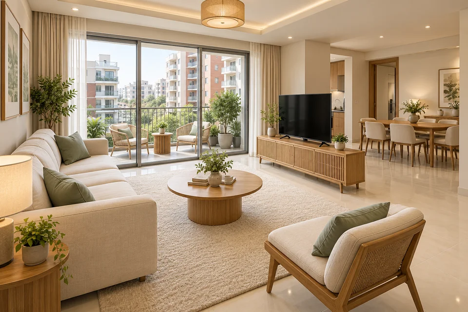

Light, space and a softer palette
An ivory sofa faces a slim TV divider, with a round oak table between them. The living area stays open to dining and connects directly to the balcony.
SOFT MODERN / APARTMENT CONCEPT

Natural oak, soft sage and open connections. This two-bedroom concept follows the approved layout, with living and dining spaces flowing together and direct access from the kitchen to the utility room.
THE CONCEPT BRIEF
THE BIGGER PICTURE
The approved layout, showing the open living and dining spaces, two bedrooms, two bathrooms and the kitchen’s direct utility access.
Tap a room on the plan to explore its concept.
Open the full-size planCOME ON IN
Explore the spaces, materials and small decisions that bring the whole apartment together. Select any image for a larger view.
An ivory sofa faces a slim TV divider, with a round oak table between them. The living area stays open to dining and connects directly to the balcony.
A six-seat oval table anchors the open dining area. Clear routes connect the main entry, living space, bedroom vestibule and open kitchen.
An open entrance leads from dining into the kitchen. L-shaped counters run along two walls, with the hob on the left, sink beneath the rear window and fridge beside the utility partition.
The bed is framed by two bedside tables, with wall storage and a clear foot-end route. The private en suite connects directly to this bedroom.
A double bed, two bedside tables and wall storage follow the approved second-bedroom arrangement. The southwest entrance stays clear.
The shared bathroom opens from the central vestibule. A shower spans the far end, with the toilet and vanity arranged along one side and a clear dry entry.
Two compact chairs and a small round table create a place for tea. Corner planters stay away from the living-room slider and its access route.
The en suite is reached directly from the primary bedroom. A separate shower, compact vanity and toilet follow the approved plan, with dry standing space by the entrance.
The utility room is accessed from the kitchen. A washing machine and utility sink occupy the far end, keeping the doorway and central floor open.